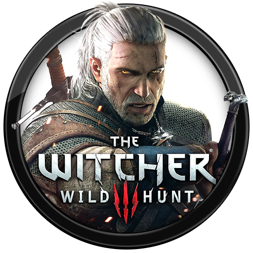

Useful links
What is Witcher 3?
 The Witcher 3: Wild Hunt[a] is a 2015 action role-playing game developed and published by CD Projekt and based on The Witcher series of fantasy novels by Andrzej Sapkowski. It is the sequel to the 2011 game The Witcher 2: Assassins of Kings, played in an open world with a third-person perspective. Players control protagonist Geralt of Rivia, a monster hunter (known as a witcher) who is looking for his missing adopted daughter on the run from the Wild Hunt, an otherworldly force determined to capture her and use her powers. Players battle the game's many dangers with weapons and magic, interact with non-player characters, and complete main-story and side quests to acquire experience points and gold, which are used to increase Geralt's abilities and purchase equipment. Its central story has several endings, determined by the player's choices at certain points in the game.
Development
Development began in 2011 and lasted for three and a half years. Voice recording took more than two and a half years. The writing was infused with realistic aspects such as moral ambiguity in an attempt to avoid simplification, impart authenticity, and reflect Sapkowski's novels. Central and Northern European cultures formed the basis of the game's world. REDengine 3 enabled the developer to create a complex story without compromising the game's open world. The music was composed by Marcin Przybyłowicz and performed by the Brandenburg State Orchestra.
The Witcher 3: Wild Hunt was released for Microsoft Windows, PlayStation 4, and Xbox One in May 2015, with a Nintendo Switch version released in October 2019. The game received critical acclaim, with praise for its gameplay, narrative, world design, combat, and visuals, although it received minor criticism due to technical issues. It received numerous Game of the Year awards and has been cited as one of the greatest video games ever made. It was also a commercial success, shipping more than 20 million copies by June 2019. Two expansions were also released to critical acclaim: Hearts of Stone and Blood and Wine. A Game of the Year edition was released in August 2016, with the base game, expansions, and all downloadable content.
Other
Late December 2019 Netflix also released first season of the Witcher series which had a great positive impact on the average players of the Witcher 3 game. Here is some Steamcharts data for Witcher 3 from last couple of months.
| Month | Avg. Players | Gain | % Gain | Peak Players |
|---|---|---|---|---|
| Last 30 Days | 53 238,8 | +25 878,7 | +94,59% | 103 329 |
| December 2019 | 27 360,0 | +14 199,4 | +107,89% | 94 601 |
| November 2019 | 13 160,6 | +3 260,5 | +32,93% | 26 594 |
| October 2019 | 9 900,2 | -3 355,4 | -25,31% | 20 367 |
| September 2019 | 13 255,6 | +230,2 | +1,77% | 30 585 |